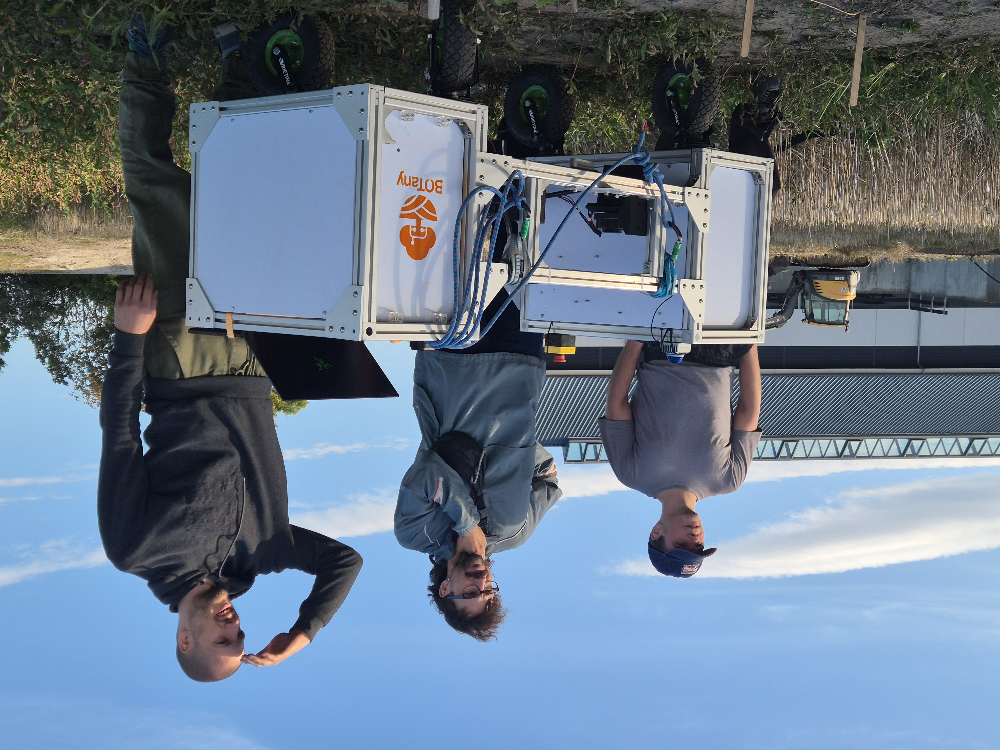

A project portfolio
From mechanisms
to working robots.
A visual timeline of the robotic systems I have designed, built, integrated and tested.
01 / 05
AGRICULTURE
REHABILITATION
UNDERWATER ROBOTICS
Selected engineering work
Project timeline
Choose a project to explore

BBOTany / field robotics
01 FIELD ROBOTICS 2025 — PRESENT
Agricultural
weeding robot
Co-founder · Lead mechanical design engineer
Designing field-ready hardware for precise weed removal, from toolhead mechanisms to quick-change interfaces and robot integration.
- 2-DOFpan-and-tilt toolheads
- < 2 minimplement changeover
- ROS 2CAN bus and encoder integration
 05Parallel mechanism / rehabilitation
05Parallel mechanism / rehabilitation
02 REHABILITATION ROBOTICS 2024 — 2025
Five-bar parallel
arm robot
Robotics Engineer Research Assistant · Aalborg University
Designed and tested a parallel mechanism for rehabilitation research, with a focus on positioning accuracy and controlled movement.
- ±0.5 mmverified positioning accuracy
- 5-barparallel linkage architecture
- Researchbiomechanics and rehabilitation
 XRLower-limb biomechanics / CAD
XRLower-limb biomechanics / CAD
03 REHABILITATION ROBOTICS MSc PERIOD*
Rehabilitation
exoskeleton
Center for Rehabilitation Robotics · Aalborg University
Contributed to a lower-limb exoskeleton for studying hamstring mechanics, combining mechanical revisions with ROS 2 control and exercise patterns.
- CADprototype design revisions
- ROS 2modular control and data acquisition
- Exercisemovement patterns for rehabilitation research
 UWUnderwater robotics / prototype
UWUnderwater robotics / prototype
04 MARINE ROBOTICS 2021 — 2022
Biomimetic
underwater robot
Mechanical design · Cyprus Robotics
Developed a dolphin-inspired tail mechanism and underwater hardware, then worked through prototyping and environmental testing.
- Tailmechanism development
- Sealingmarine housings and interfaces
- Testingpressure and salinity conditions
 AIOrca · Caretta / underwater vision
AIOrca · Caretta / underwater vision
05 UNDERWATER VISION 2021 — 2022
Fish detection
and tracking
Development contribution · Cyprus Robotics, with Orca–Caretta
Helped develop an AI-based vision system for autonomous underwater vehicles to detect, classify and track fish in challenging water conditions.
- Detectfind fish in underwater imagery
- Classifyidentify observed species
- Trackfollow multiple moving targets
01 / 05
*The exoskeleton was completed during my MSc period; its exact project dates were not listed in my CV. Other dates follow the related role periods.